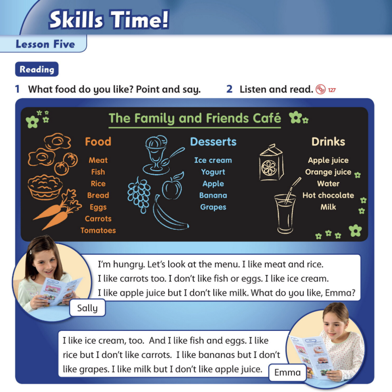

Family & Friends 1 - Unit 12 - Lesson 5
Nghe - Äá»c - Dịch
Sẵn sà ng
Hướng dẫn trả bà i
- Bấm Nghe để luyện Ä‘á»c theo dòng mà u và ng.
- Nghe nhiá»u lần để luyện phát âm đúng, ngữ Ä‘iệu biểu cảm.
- Khi trả bà i, con có thể quay mà n hình và đá»c theo.
- Sau đó, con dịch bà i sang Tiếng Việt - Dịch sát nghĩa - tốc độ đủ nhanh.

Từ mới cần nhớ
Con xem nghĩa của từ để hiểu bà i. Khi trả bà i, con tự dịch bà i bằng Tiếng Việt.
- hungry - đói.
- menu - thá»±c Ä‘Æ¡n.
- meat - thịt.
- fish - cá.
- rice - cơm; gạo.
- bread - bánh mì.
- eggs - trứng.
- carrots - cà rốt.
- tomatoes - cà chua.
- desserts - món tráng miệng.
- ice cream - kem.
- yogurt - sữa chua.
- bananas - chuối.
- grapes - nho.
- drinks - đồ uống.
- apple juice - nước táo ép.
- milk - sữa.
- let's - chúng ta hãy. Let's = Let us.
- but - nhÆ°ng.
- Let's look at ... - Chúng ta hãy nhìn/xem... Let's look at the menu = Chúng ta hãy xem thực đơn.
- I like ... - mình thÃch... I like meat and rice = Mình thÃch thịt và cÆ¡m.
- I don't like ... - mình không thÃch...
- but I don't like ... - nhÆ°ng mình không thÃch...
- What do you like? - Bạn thÃch gì?
- I'm hungry. - Mình đang đói.
- I like ... and ... - Mình thÃch ... và ...
- I like ... too. - Mình cÅ©ng thÃch ...
- I don't like ... or ... - Mình không thÃch ... hoặc ...
- I like ... but I don't like ... - Mình thÃch ... nhÆ°ng mình không thÃch ...
- What do you like, ...? - ..., bạn thÃch gì?